Tanabe, Wakayama: things to do, food and stays
Tanabe · Wakayama
Tanabe
Highlighted on the Wakayama map.

Stay
湯巡りの宿 わたらせ温泉 ホテルささゆり
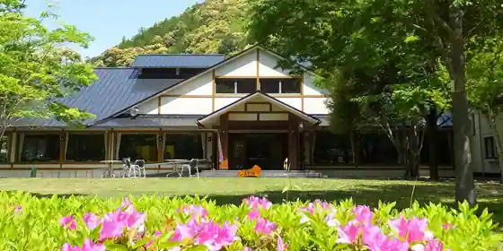
Yu Meguri No Yado Watarase Onsen Hotel Sasayuri
Hotel at Watarase Onsen in Motomiya, Tanabe with open-air baths and private baths.
ホテルハーヴェスト 南紀田辺
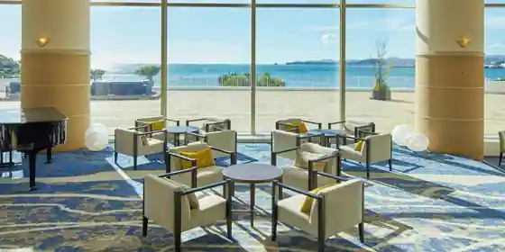
Hotel Havesuto Nanki Tanabe
大露天の宿 わたらせ温泉 ホテルやまゆり
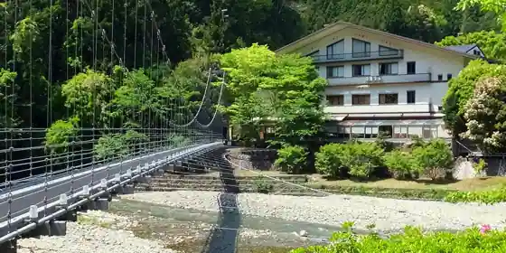
Dai Roten No Yado Watarase Onsen Hotel Yamayuri
Hotel at Watarase Onsen in Motomiya, Tanabe with free-flowing hot spring baths and open-air baths.
コンフォートホテル紀伊田辺
Comfort Hotel Kitanabe
Hotel in Minato, Tanabe; 5-minute walk from Kitanabe Station.
冨士屋
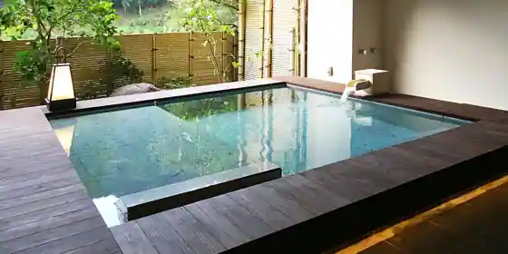
Fujiya
Inn at Kawazoinitatsu Onsen in Motomiya, Tanabe with riverside setting.
山水館 川湯みどりや
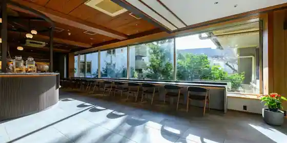
Sansui Kan Kawayu Midoriya
Inn in Motomiya, Tanabe with open-air baths and a sauna.
ホテルＮＡＮＫＡＩＲＯ
Hotel NANKAIRO
Hotel in Minato, Tanabe; 1-minute walk from Jrkitanabe Station.
田辺ステーションホテル
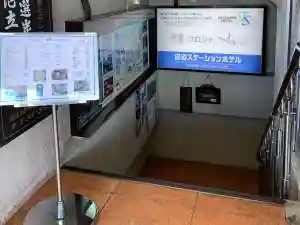
Tanabe Station Hotel
Samsara
Samsara
アルティエホテル紀伊田辺
Aruteie Hotel Kitanabe
Hotel in Shimoyashiki, Tanabe with business travelers.
THE HOTEL TERAMOTO
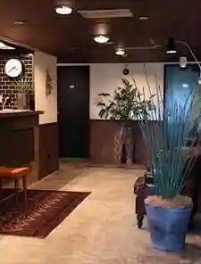
THE HOTEL TERAMOTO
Inn in Shimoyashiki, Tanabe with business travelers.
SAKURAZAKA
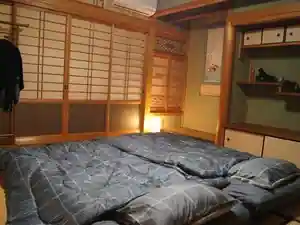
SAKURAZAKA
Inn in Takao, Tanabe; 10-minute walk from Kitanabe Station.
Dining
召膳 無苦庵
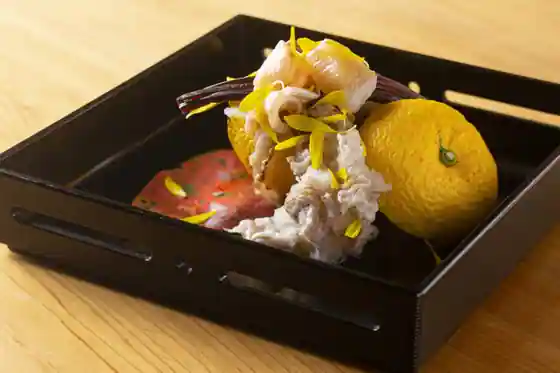
Sho Zen Mu Ku Iori
鈴屋
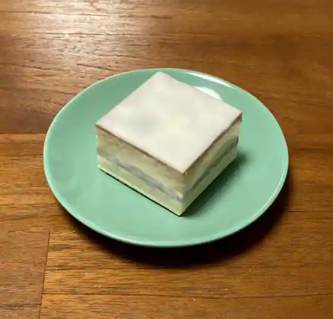
Suzunoya
フランス食堂 Chilo
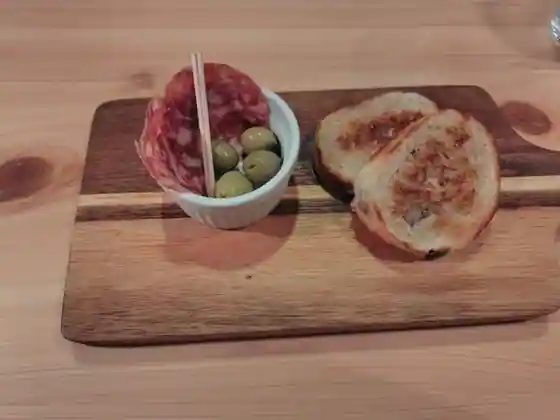
Furansu Shokudo Chilo
Mobo
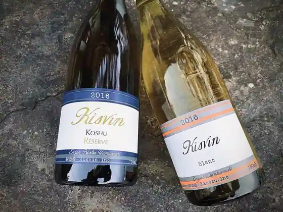
Mobo
しんべ
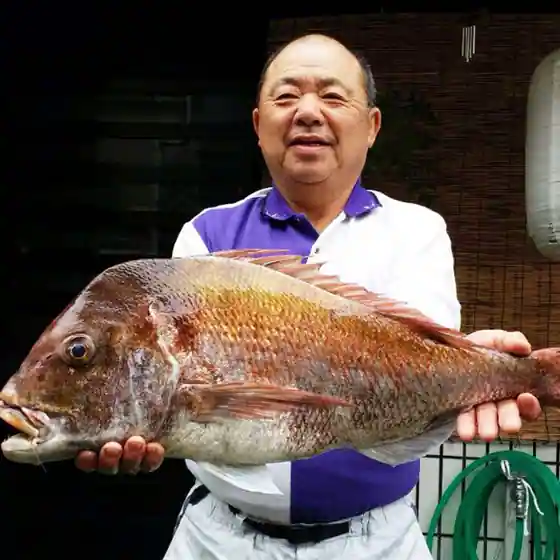
Shinbe
旅館 あづまや
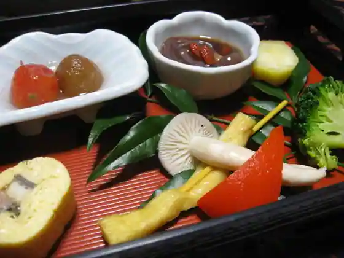
Ryokan Azumaya
とりそば 下地橋
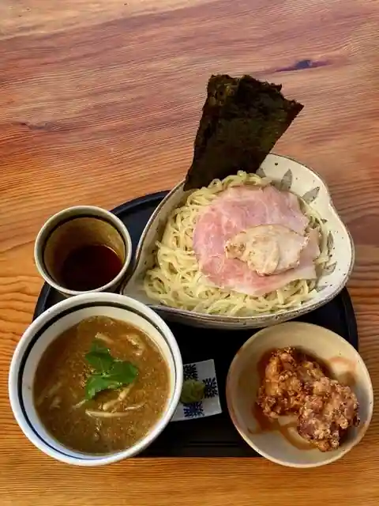
Torisoba Shitaji Hashi
茶房 珍重庵 本宮店
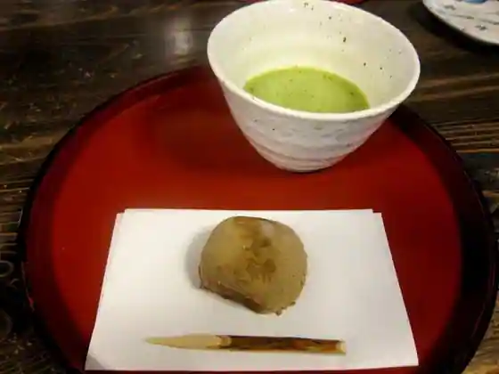
Sabo Chincho Iori Motomiya
海鮮れすとらん 勘八屋
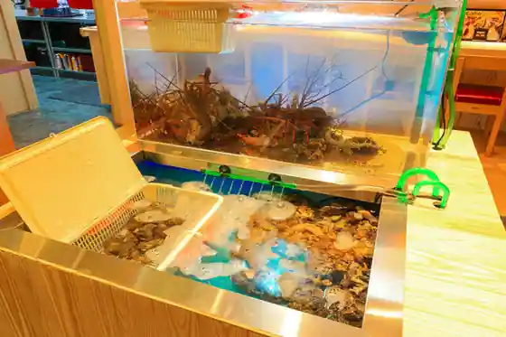
Kaisen Restaurant Kanpachi Ya
よし平
Yoshi Taira
とっくり
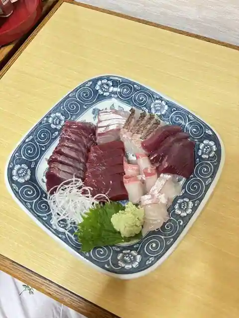
Tokkuri
よし平 いなり店
Yoshi Taira Inari
徳乃
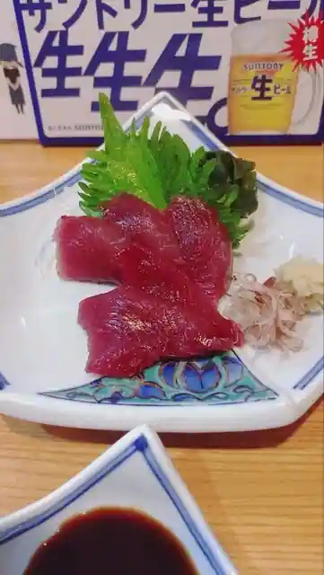
Toku No
STEAK TEXAS 南紀白浜店
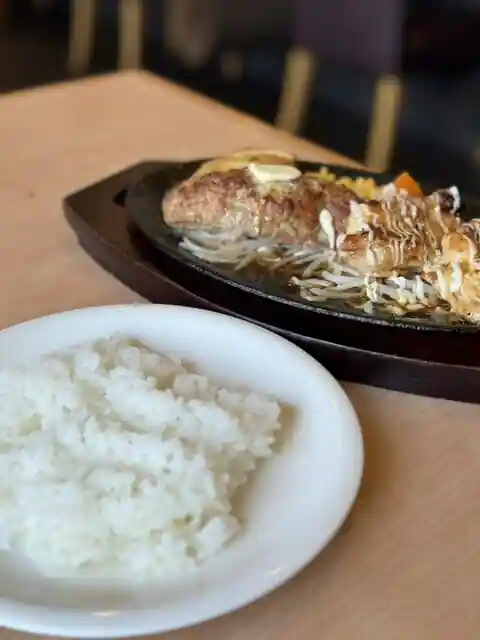
STEAK TEXAS Nankishirahama
厚切りとんかつ・牛かつ よし平 本店
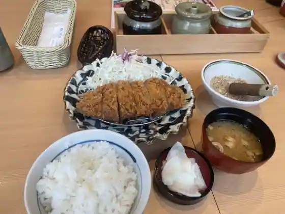
Atsushi Kiri Tonkatsu Ushi Katsu Yoshi Taira Hon
湯の峯荘
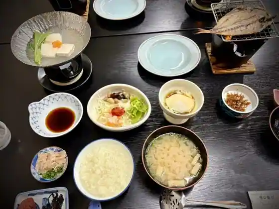
Yu No Mine So
宝来寿司
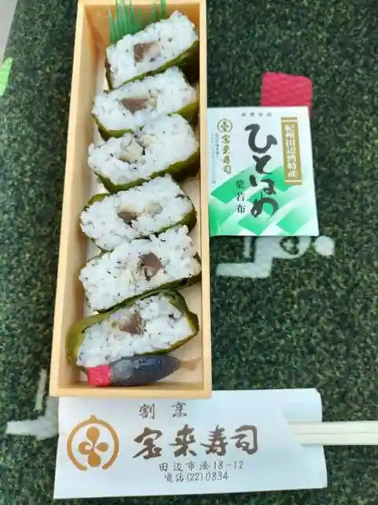
Horai Sushi
廻鮮 心鮨
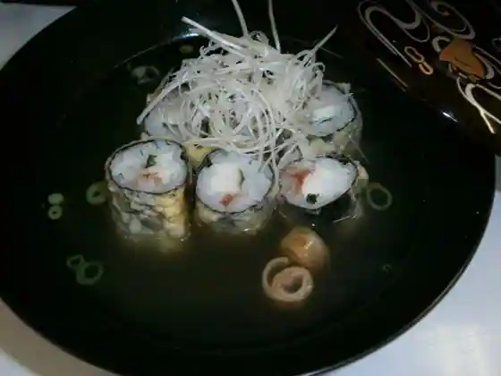
Kaisen Kokoro Sushi
銀ちろ 塔の内店
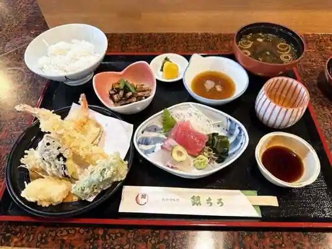
Gin Chiro To No Nai
宮ずし
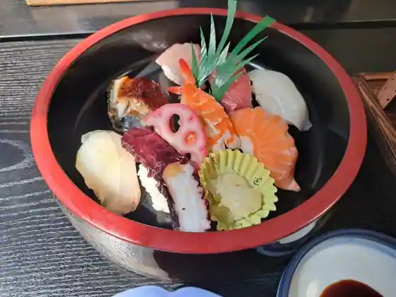
Miya Zushi
とろろや
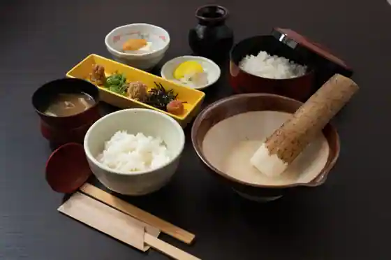
Tororoya
杜の郷 みるりいな
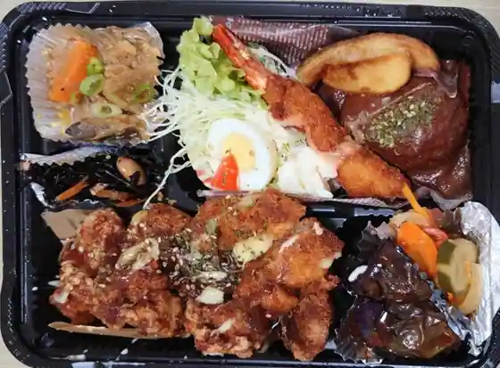
Mori No Sato Mirurina
海鮮せんべい南紀
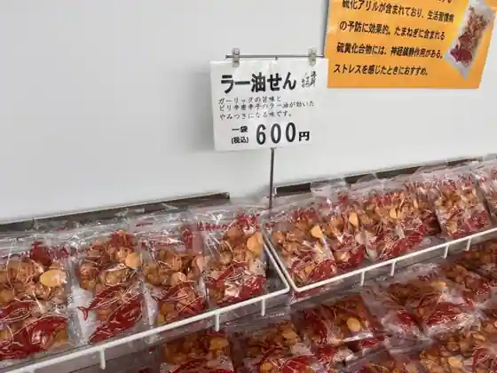
Kaisen Senbei Nanki
銀ちろ本店
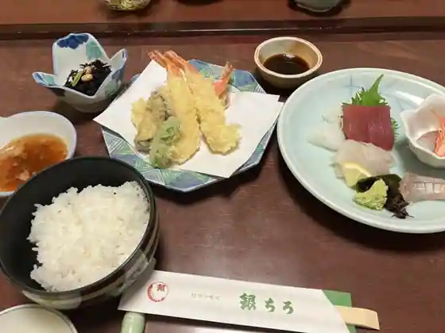
Gin Chiro Hon
Sights
Kumano Motomiya Taisha

Takano Ryujin Sukai Line

Ryujin Onsen

Tenjin Saki

Yu no Mine Onsen Tsubo Yu
Dai Sai Hara
Sennin Furo
Kizetsu Kyo
Roadside Station Tanabe Ryujin Gomasan Sukaitawa
Kinan Kanko Budo Sono
Tanabe Ogigahama Beach
Ryujin Village Dragon Museum
Kumano Kodo Nakahechi Chottoyorimichi Lookout
Yasukawa Gorge
Roadside Station Mizu no Sato Hidakagawa Ryu Yu
Roadside Station Oku Kumano Kodo Hongu
Roadside Station Ryujin (Uddei Plaza Ki Zoku Kan)
Aji Koro
Roadside Station Kumano Kodo Nakahechi
Minakatakumagusu Kensho Kan Minakatakumagusu Tei
Wakayamaken Sekai Isan Center
Goma Dan Yama Forest Park Wairudoraifu
Tokei Shrine
Mandara Art Museum
Mandara Falls
Nanda Ryuo Sha
Abe Seimei Sha
Hosshin Mon Oji